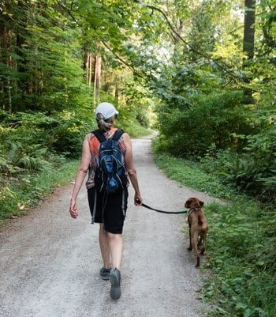

Body
How can we help our Bodies
To achieve good physical wellbeing there are a number of key factors that will playa
major role. Diet is important, keep to a well balanced diet, curb snacking and ensure
you intake key nutrients. Exercise can be a great way to keep in shape, and can suit
you regardless of your fitness level. Rest is important and can be built into your day
quite easily. Ensure you get enough sleep by establishing a good night time routine.
In regards to alcohol limit your consumption and if you smoke, try to cut down or even
give up the smoking habit.

Ways to improve your health by working with your Body
- Find something you enjoy doing and it will be easier to keep doing it.
- Exercise outside and you can experience nature at the same time
- Change your diet, add healthy choices, skip the fast food and snack sensibly.
- Go to bed earlier, ensure you get undisturbed sleep, skip the late night movie.
- Drink, but try the sensible approach, know your limit and try no alcohol days.
- Ensure you get the nutrients, eat a varied diet that covers the major food groups.
- Don't skip meals, try to keep to breakfast, lunch and dinner and maybe 2 snacks.
- Try meat free days and make simple changes like low sugar and salt products.
- Exercise on a regular basis, at least 3 times a week.
- Try different types of exercise to improve your cardiovascular and flexibility level.
Take care of your body. It's the
only place you have to live.
- Jim Rohn